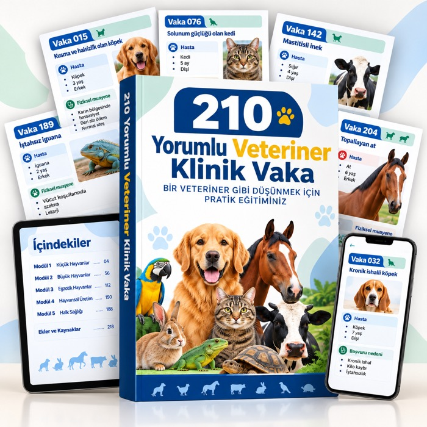
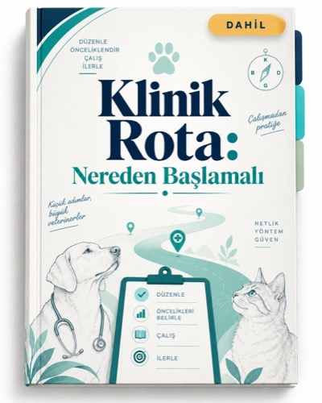
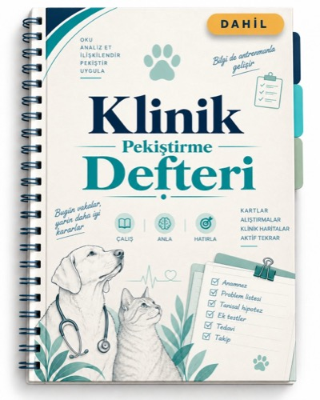
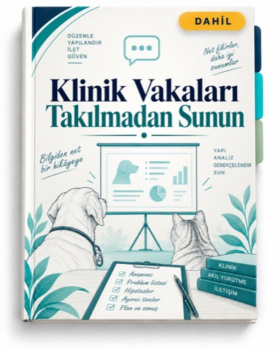

Tam kütüphane · 210 vaka
Kullanım kılavuzu, içindekiler ve 5 rotanın tüm vakaları tek bir dosyada.
Tam kütüphaneyi aç →5 öğrenme rotası (ayrı dosyalar)
Küçük Hayvanlar ve Klinik Akıl Yürütme
Vaka 001–040 · gastroenteroloji, dermatoloji, nöroloji, kardiyoloji, endokrinoloji, enfeksiyon
Aç →Rota 02Tetkikler ve Tanısal Yorumlama
Vaka 041–095 · hemogram, biyokimya, idrar analizi, sitoloji, görüntüleme
Aç →Rota 03Acil Durumlar, Toksikoloji ve Anestezi
Vaka 096–135 · acil, zehirlenmeler, akut değişiklikler, anestezi
Aç →Rota 04Cerrahi, Üreme ve Neonatoloji
Vaka 136–170 · cerrahi, gebelik, doğum, distosi, puerperyum
Aç →Rota 05Büyük Hayvanlar, Üretim, Egzotikler ve Halk Sağlığı
Vaka 171–210 · atlar, sığırlar, koyunlar, kanatlılar, sürüngenler, zoonozlar
Aç →3 bonus

Bonus 01Klinik Rota: Nereden Başlamalı
Klinik öğreniminizi düzenlemek ve önce neye öncelik vereceğinizi anlamak için görsel bir rehber.
Aç →
Bonus 02Klinik Pekiştirme Defteri
Vaka okumalarını aktif hatırlamaya dönüştürmek için kartlar ve alıştırmalar.
Aç →
Bonus 03Klinik Vakaları Takılmadan Sunun
Akademik bir vaka sunumunu daha iyi düzenlemek için yapılar ve şablonlar.
Aç →Nereden başlamalı?
- Önce Bonus 01 · Klinik Rota'yı okuyun: her vakaya uygulayacağınız 5 adımlık yöntemi ve 8 haftalık planı verir.
- Rota 01 ile başlayın. Her vakada «Klinik durak» kutusunda durun ve çözüme bakmadan kendi hipotezlerinizi yazın.
- Akılda tutulacak noktaları Bonus 02 · Klinik Pekiştirme Defteri'ne kendi cümlelerinizle geçirin ve aralıklı tekrar takvimini kullanın.
- Haftada bir vakayı Bonus 03'teki 5 dakikalık şablonla yüksek sesle sunun.
Sonraki adım
Bonus 01'i açın, ardından Rota 01'in ilk vakasını 25 dakikalık rutinle çözün.
Klinik Rota'yı aç →Bu sayfayı kaydedin: kalıcı erişim bağlantınızdır. Yalnızca kişisel kullanım içindir; yeniden satışı ve dağıtımı yasaktır. · Eğitim materyalidir: klinik muayenenin ve veteriner hekim kararının yerine geçmez.